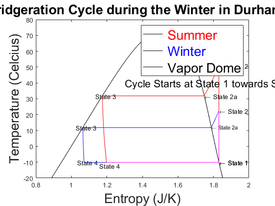
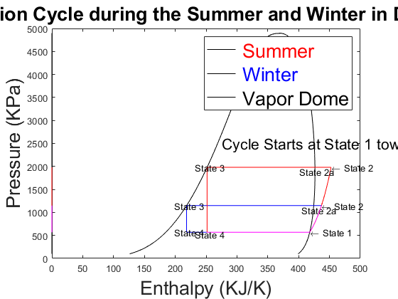

clear all; close all
clc;
T_L = 5;
T_H = 2;
Cold_Space = 273-15;
Hot_Space_Summer = 273 + 30;
Hot_Space_Winter = 273 + 10;
T_Outside = linspace(250,Hot_Space_Summer,1000);
Q_1 = 1;
T_1 = Cold_Space + T_L;
P_1 = CoolProp.PropsSI('P', 'T', T_1, 'Q', Q_1, 'R410a');
H_1 = CoolProp.PropsSI('H', 'T', T_1, 'Q', Q_1, 'R410a');
U_1 = CoolProp.PropsSI('U', 'T', T_1, 'Q', Q_1, 'R410a');
S_1 = CoolProp.PropsSI('S', 'T', T_1, 'Q', Q_1, 'R410a');
Q_3 = 0;
T_3_Summer = Hot_Space_Summer + T_H;
P_3_Summer = CoolProp.PropsSI('P', 'T', T_3_Summer, 'Q', Q_3, 'R410a');
H_3_Summer = CoolProp.PropsSI('H', 'T', T_3_Summer, 'Q', Q_3, 'R410a');
U_3_Summer = CoolProp.PropsSI('U', 'T', T_3_Summer, 'Q', Q_3, 'R410a');
S_3_Summer = CoolProp.PropsSI('S', 'T', T_3_Summer, 'Q', Q_3, 'R410a');
T_3_Winter = Hot_Space_Winter + T_H;
P_3_Winter = CoolProp.PropsSI('P', 'T', T_3_Winter, 'Q', Q_3, 'R410a');
H_3_Winter = CoolProp.PropsSI('H', 'T', T_3_Winter, 'Q', Q_3, 'R410a');
U_3_Winter = CoolProp.PropsSI('U', 'T', T_3_Winter, 'Q', Q_3, 'R410a');
S_3_Winter = CoolProp.PropsSI('S', 'T', T_3_Winter, 'Q', Q_3, 'R410a');
S_2_Summer = S_1;
P_2_Summer = P_3_Summer;
T_2_Summer = CoolProp.PropsSI('T', 'P', P_2_Summer, 'S', S_2_Summer, 'R410a');
H_2_Summer = CoolProp.PropsSI('H', 'P', P_2_Summer, 'S', S_2_Summer, 'R410a');
U_2_Summer = CoolProp.PropsSI('U', 'P', P_2_Summer, 'S', S_2_Summer, 'R410a');
P_2_Winter = P_3_Winter;
S_2_Winter = S_1;
T_2_Winter = CoolProp.PropsSI('T', 'P', P_2_Winter, 'S', S_2_Winter, 'R410a');
H_2_Winter = CoolProp.PropsSI('H', 'P', P_2_Winter, 'S', S_2_Winter, 'R410a');
U_2_Winter = CoolProp.PropsSI('U', 'P', P_2_Winter, 'S', S_2_Winter, 'R410a');
Q_2a=1;
P_2a_Summer = P_2_Summer;
T_2a_Summer = T_3_Summer;
S_2a_Summer = CoolProp.PropsSI('S', 'P', P_2a_Summer, 'Q', Q_2a, 'R410a');
H_2a_Summer = CoolProp.PropsSI('H', 'P', P_2a_Summer, 'Q', Q_2a, 'R410a');
U_2a_Summer = CoolProp.PropsSI('U', 'P', P_2a_Summer, 'Q', Q_2a, 'R410a');
P_2a_Winter = P_2_Winter;
T_2a_Winter = T_3_Winter;
S_2a_Winter = CoolProp.PropsSI('S', 'P', P_2a_Winter, 'Q', Q_2a, 'R410a');
H_2a_Winter = CoolProp.PropsSI('H', 'P', P_2a_Winter, 'Q', Q_2a, 'R410a');
U_2a_Winter = CoolProp.PropsSI('U', 'P', P_2a_Winter, 'Q', Q_2a, 'R410a');
T_4 = T_1;
H_4_Summer = H_3_Summer;
P_4_Summer = P_1;
U_4_Summer = CoolProp.PropsSI('U', 'P', P_4_Summer, 'H', H_4_Summer, 'R410a');
S_4_Summer = CoolProp.PropsSI('S', 'P', P_4_Summer, 'H', H_4_Summer, 'R410a');
H_4_Winter = H_3_Winter;
P_4_Winter = P_1;
U_4_Winter = CoolProp.PropsSI('U', 'P', P_4_Winter, 'H', H_4_Winter, 'R410a');
S_4_Winter = CoolProp.PropsSI('S', 'P', P_4_Winter, 'H', H_4_Winter, 'R410a');
Q_SL = 0;
Q_SV = 1;
P_SL_SV = linspace(100000,4900000,1000);
T_SL = zeros(length(P_SL_SV));
S_SL = zeros(length(P_SL_SV));
H_SL = zeros(length(P_SL_SV));
T_SV = zeros(length(P_SL_SV));
S_SV = zeros(length(P_SL_SV));
H_SV = zeros(length(P_SL_SV));
for index=1:1000
T_SL(index) = CoolProp.PropsSI('T', 'P', P_SL_SV(index), 'Q', Q_SL, 'R410a') -273;
S_SL(index) = CoolProp.PropsSI('S', 'P', P_SL_SV(index), 'Q', Q_SL, 'R410a');
H_SL(index) = CoolProp.PropsSI('H', 'P', P_SL_SV(index), 'Q', Q_SL, 'R410a');
T_SV(index) = CoolProp.PropsSI('T', 'P', P_SL_SV(index), 'Q', Q_SV, 'R410a') -273;
S_SV(index) = CoolProp.PropsSI('S', 'P', P_SL_SV(index), 'Q', Q_SV, 'R410a');
H_SV(index) = CoolProp.PropsSI('H', 'P', P_SL_SV(index), 'Q', Q_SV, 'R410a');
end
S_Compressor = S_1;
P_Compressor_Summer = linspace(P_1,P_2_Summer,1000);
P_Compressor_Winter = linspace(P_1,P_2_Winter,1000);
T_Compressor_Summer = zeros(length(P_Compressor_Summer));
T_Compressor_Winter = zeros(length(P_Compressor_Summer));
S_Compressor_Summer = zeros(length(P_Compressor_Summer));
S_Compressor_Winter = zeros(length(P_Compressor_Summer));
H_Compressor_Summer = zeros(length(P_Compressor_Summer));
H_Compressor_Winter = zeros(length(P_Compressor_Summer));
for index = 1:1000
T_Compressor_Summer(index) = CoolProp.PropsSI('T', 'P', P_Compressor_Summer(index), 'S', S_Compressor, 'R410a') - 273;
T_Compressor_Winter(index) = CoolProp.PropsSI('T', 'P', P_Compressor_Winter(index), 'S', S_Compressor, 'R410a') - 273;
S_Compressor_Summer(index) = CoolProp.PropsSI('S', 'P', P_Compressor_Summer(index), 'S', S_Compressor, 'R410a');
S_Compressor_Winter(index) = CoolProp.PropsSI('S', 'P', P_Compressor_Winter(index), 'S', S_Compressor, 'R410a');
H_Compressor_Summer(index) = CoolProp.PropsSI('H', 'P', P_Compressor_Summer(index), 'S', S_Compressor, 'R410a');
H_Compressor_Winter(index) = CoolProp.PropsSI('H', 'P', P_Compressor_Winter(index), 'S', S_Compressor, 'R410a');
end
P_Condensor_Summer = P_2_Summer;
P_Condensor_Winter = P_2_Winter;
T_Condensor_Summer = linspace(T_2_Summer,T_2a_Summer+.25,1000);
T_Condensor_Winter = linspace(T_2_Winter,T_2a_Winter+.25,1000);
S_Condensor_Summer = zeros(length(P_Condensor_Summer));
S_Condensor_Winter = zeros(length(P_Condensor_Summer));
H_Condensor_Summer = zeros(length(P_Condensor_Summer));
H_Condensor_Winter = zeros(length(P_Condensor_Summer));
for index = 1:1000
S_Condensor_Summer(index) = CoolProp.PropsSI('S', 'T', T_Condensor_Summer(index), 'P', P_Condensor_Summer, 'R410a');
S_Condensor_Winter(index) = CoolProp.PropsSI('S', 'T', T_Condensor_Winter(index), 'P', P_Condensor_Winter, 'R410a');
H_Condensor_Summer(index) = CoolProp.PropsSI('H', 'T', T_Condensor_Summer(index), 'P', P_Condensor_Summer, 'R410a');
H_Condensor_Winter(index) = CoolProp.PropsSI('H', 'T', T_Condensor_Winter(index), 'P', P_Condensor_Winter, 'R410a');
end
T_Condensora_Summer = [T_2a_Summer,T_3_Summer];
T_Condensora_Winter = [T_2a_Winter,T_3_Winter];
P_Condensora_Summer = [P_2a_Summer,P_3_Summer];
P_Condensora_Winter = [P_2a_Winter,P_3_Winter];
S_Condensora_Summer = [S_2a_Summer,S_3_Summer];
S_Condensora_Winter = [S_2a_Winter,S_3_Winter];
H_Condensora_Summer = [H_2a_Summer,H_3_Summer];
H_Condensora_Winter = [H_2a_Winter,H_3_Winter];
H_Valve_Summer = H_3_Summer;
H_Valve_Winter = H_3_Winter;
P_Valve_Summer = linspace(P_3_Summer,P_4_Summer,1000);
P_Valve_Winter = linspace(P_3_Winter,P_4_Winter,1000);
S_Valve_Summer = zeros(length(P_Valve_Summer));
S_Valve_Winter = zeros(length(P_Valve_Summer));
T_Valve_Summer = zeros(length(P_Valve_Summer));
T_Valve_Winter = zeros(length(P_Valve_Summer));
for index = 1:1000
S_Valve_Summer(index) = CoolProp.PropsSI('S', 'H', H_Valve_Summer, 'P', P_Valve_Summer(index), 'R410a');
S_Valve_Winter(index) = CoolProp.PropsSI('S', 'H', H_Valve_Winter, 'P', P_Valve_Winter(index), 'R410a');
T_Valve_Summer(index) = CoolProp.PropsSI('T', 'H', H_Valve_Summer, 'P', P_Valve_Summer(index), 'R410a');
T_Valve_Winter(index) = CoolProp.PropsSI('T', 'H', H_Valve_Winter, 'P', P_Valve_Winter(index), 'R410a');
end
T_Evaporator_Summer = [T_4,T_1];
T_Evaporator_Winter = [T_4,T_1];
P_Evaporator_Summer = [P_4_Summer,P_1];
P_Evaporator_Winter = [P_4_Winter,P_1];
S_Evaporator_Summer = [S_4_Summer,S_1];
S_Evaporator_Winter = [S_4_Winter,S_1];
H_Evaporator_Summer = [H_4_Summer,H_1];
H_Evaporator_Winter = [H_4_Winter,H_1];
figure(1)
plot(S_SL/1000,T_SL,'k',S_SV/1000,T_SV,'k')
hold on
plot(S_Compressor_Winter/1000,T_Compressor_Winter,'b',S_Condensor_Winter/1000, T_Condensor_Winter-273.15,'b',S_Condensora_Winter/1000, T_Condensora_Winter-273.15,'b',S_Valve_Winter/1000,T_Valve_Winter-273.15,'b',S_Evaporator_Winter/1000, T_Evaporator_Winter-273.15,'b')
text(S_1/1000,T_1-273.15, '\leftarrow State 1')
text(S_2_Winter/1000,T_2_Winter-273.15, '\leftarrow State 2')
text(S_2a_Winter/1000,T_2a_Winter-273.15, '\leftarrow State 2a','FontSize', 8)
text(S_3_Winter/1000-.04,T_3_Winter-273.15, 'State 3')
text(S_4_Winter/1000-.04,T_4-273.15, 'State 4')
plot(S_Compressor_Summer/1000,T_Compressor_Summer,'r',S_Condensor_Summer/1000, T_Condensor_Summer-273.15,'r',S_Condensora_Summer/1000, T_Condensora_Summer-273.15,'r',S_Valve_Summer/1000,T_Valve_Summer-273.15,'r',S_Evaporator_Summer/1000, T_Evaporator_Summer-273.15,'m')
plot(S_Compressor_Winter/1000,T_Compressor_Winter,'m')
text(S_1/1000,T_1-273.15, '\leftarrow State 1')
text(S_2_Summer/1000,T_2_Summer-273.15, '\leftarrow State 2')
text(S_2a_Summer/1000,T_2a_Summer-273.15, '\leftarrow State 2a')
text(S_3_Summer/1000-.04,T_3_Summer-273.15, 'State 3')
text(S_4_Summer/1000-.04,T_4-273.15-2, 'State 4')
text(1.3,40,'Cycle Starts at State 1 towards State 2','FontSize',16)
title('Refrigeration Cycle during the Summer in Durham, NH')
xlabel('Entropy (KJ/K)')
ylabel('Temperature (Celcius)')
xlim([.8 2])
ylim([-20 80])
hold off
title('Refridgeration Cycle during the Winter in Durham, NH','FontSize',20)
xlabel('Entropy (J/K)','FontSize',20)
ylabel('Temperature (Celcius)','FontSize',20)
lgd = legend('\color{red} Summer','\color{blue} Winter','\color{black} Vapor Dome');
lgd.FontSize = 20;
xlim([.8 2])
ylim([-20 80])
hold off
figure(2)
plot(H_SL/1000,P_SL_SV/1000,'k',H_SV/1000,P_SL_SV/1000,'k')
hold on
P_Condensor_Winter = [P_2_Winter,P_2a_Winter];
H_Condensor_Winter = [H_2_Winter,H_2a_Winter];
P_Valve_Winter = [P_3_Winter,P_4_Winter];
H_Valve_Winter = [H_3_Winter,H_4_Winter];
plot(H_Compressor_Winter/1000,P_Compressor_Winter/1000,'b',H_Condensor_Winter/1000, P_Condensor_Winter/1000,'b',H_Condensora_Winter/1000, P_Condensora_Winter/1000,'b',H_Valve_Winter/1000,P_Valve_Winter/1000,'b',H_Evaporator_Winter/1000, P_Evaporator_Winter/1000,'b')
text(H_1/1000,P_1/1000, '\leftarrow State 1')
text(H_2_Winter/1000,P_2_Winter/1000, '\leftarrow State 2')
text(H_2a_Winter/1000-20,P_2a_Winter/1000-100, 'State 2a')
text(H_3_Winter/1000-20,P_3_Winter/1000, 'State 3')
text(H_4_Winter/1000-20,P_4_Winter/1000, 'State 4')
P_Condensor_Summer = [P_2_Summer,P_2a_Summer];
H_Condensor_Summer = [H_2_Summer,H_2a_Summer];
P_Valve_Summer = [P_3_Summer,P_4_Summer];
H_Valve_Summer = [H_3_Summer,H_4_Summer];
plot(H_Compressor_Summer/1000,P_Compressor_Summer/1000,'r',H_Condensor_Summer/1000, P_Condensor_Summer/1000,'r',H_Condensora_Summer/1000, P_Condensora_Summer/1000,'r',H_Valve_Summer/1000,P_Valve_Summer/1000,'r',H_Evaporator_Summer/1000, P_Evaporator_Summer/1000,'m')
plot(H_Compressor_Winter/1000,P_Compressor_Winter/1000,'m')
text(H_2_Summer/1000,P_2_Summer/1000, '\leftarrow State 2')
text(H_2a_Summer/1000-25,P_2a_Summer/1000-100, 'State 2a')
text(H_3_Summer/1000-20,P_3_Summer/1000, 'State 3')
text(H_4_Summer/1000-20,P_4_Summer/1000-50, 'State 4')
text(275,2500, 'Cycle Starts at State 1 towards State 2','FontSize',16)
title('Refrigeration Cycle during the Summer and Winter in Durham, NH','FontSize',20)
xlabel('Enthalpy (KJ/K)','FontSize',20)
ylabel('Pressure (KPa)','FontSize',20)
lgd = legend('\color{red} Summer','\color{blue} Winter','\color{black} Vapor Dome');
lgd.FontSize = 20;
xlim([0 500])
ylim([0 5000])
hold off
COP_Summer = (H_1 - H_4_Summer)/(H_2_Summer - H_1);
COP_Winter = (H_1 - H_4_Winter)/(H_2_Winter - H_1);
dH_Evaporator_Summer = H_1 - H_4_Summer;
dH_Evaporator_Winter = H_1 - H_4_Winter;
Cooling_Capacity = 5000;
Mass_Flow_Rate_Summer = Cooling_Capacity / dH_Evaporator_Summer;
Mass_Flow_Rate_Winter = Cooling_Capacity / dH_Evaporator_Winter;
Compressor_Power_Summer = Mass_Flow_Rate_Summer * (H_2_Summer - H_1);
Compressor_Power_Winter = Mass_Flow_Rate_Winter * (H_2_Winter - H_1);
Final_Data_Names = ['COP_Summer',' COP_Winter',' Mass_Flow_Rate_Summer',' Mass_Flow_Rate_Winter',' Compressor_Power_Summer',' Compressor_Power_Winter'];
Final_Data_Values = [COP_Summer,COP_Winter,Mass_Flow_Rate_Summer,Mass_Flow_Rate_Winter,Compressor_Power_Summer,Compressor_Power_Winter];
disp('Final Data'), disp(Final_Data_Names); disp(Final_Data_Values)
Final Data
COP_Summer COP_Winter Mass_Flow_Rate_Summer Mass_Flow_Rate_Winter Compressor_Power_Summer Compressor_Power_Winter
1.0e+03 *
0.0048 0.0105 0.0000 0.0000 1.0369 0.4754
 